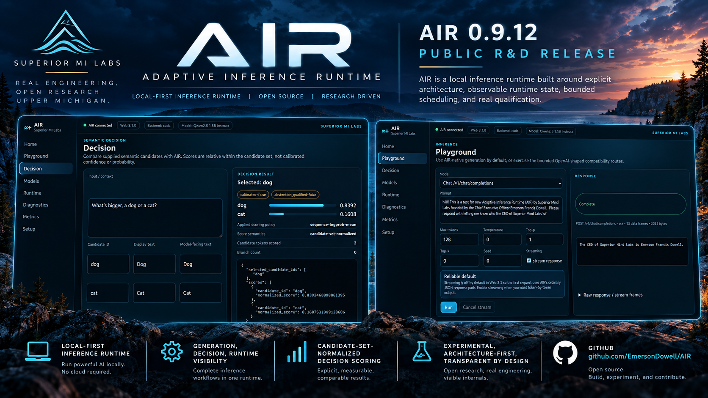

Local-first
Run inference locally and retain control over hardware, latency, privacy, models, and execution.
A local-first inference runtime built around explicit architecture, observable runtime state, bounded execution, and real qualification.
AIR is an open Superior MI Labs research effort exploring how inference systems can become more transparent, measurable, adaptable, and understandable.
AIR treats inference as an engineered runtime rather than an invisible call into a black box. State, decisions, execution boundaries, and qualification should remain inspectable.
Run inference locally and retain control over hardware, latency, privacy, models, and execution.
Expose what the runtime is doing instead of hiding important behavior behind opaque abstractions.
Clear contracts and bounded components make the system easier to reason about, test, and evolve.
Experimental behavior should survive evidence, measurement, comparison, and falsification.
AIR exposes the major stages of runtime behavior as distinct, inspectable surfaces instead of collapsing everything into one hidden inference path.
Hover across the runtime stages. The background activity responds to the same idea: signals travel through a visible system instead of disappearing into an opaque execution path.
AIR is developed as an R&D system. Experimental ideas are useful only when they can be implemented, observed, challenged, and compared against alternatives.
Model execution remains one part of a larger runtime, rather than the architecture itself.
Candidate evaluation can be surfaced explicitly, measured, and tested independently.
Diagnostics, state, metrics, configuration, and execution should remain accessible to researchers and operators.
AIR is designed to evolve through measured interaction between software architecture and the machines executing it.
The current public R&D release exposes AIR's engineering direction, runtime interface, and experimental decision surface.
AIR is not trying to hide complexity. It is trying to make complexity understandable.
GitHub remains the canonical engineering repository. Hugging Face is the public-facing research and demonstration surface.
Inspect the source and release history ↗Built in Upper Michigan. Designed to be inspected, tested, and improved in the open.
